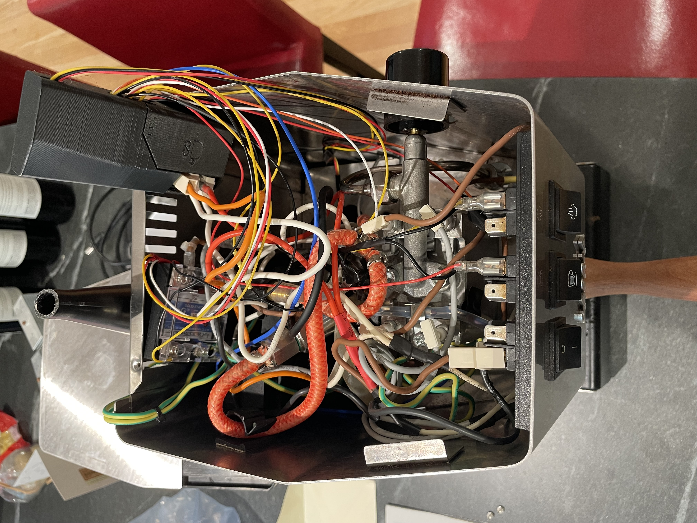

Gaggiuino Modified Espresso Machine
Gaggiuino is an open source project using an ESP32 microcontroller to control temperature and pressure in the Gaggia Classic espresso machine. PID controllers are a popular modification to this machine due to its outdated design, which results in overheating. I take no credit for the work done by the developers, I assembled my machine using wiring diagrams and code from the Github, but there were still plenty of things to figure out on my own.
The advantage of using an Arduino, ESP32, or other microcontroller instead of a basic PID is finer control of the pressure supplied by the pump while brewing coffee, which affects flavor.
Goals
- Install the Gaggiuino modification to improve temperature consistancy and flavor from the Gaggia Classic
- Learn about microcontrollers, compiling code, and electronics
Methods
- Wire the control PCB to the low voltage circuit in the coffee machine
- Safely modify the 120V AC circuit to supply power to the PCB and solid state relay
- Splice the pump outlet hose and install a pressure transducer to send data to the controller
- Compile the source code and upload it to the ESP32 using VScode and PlatformIO

Results
- Granular control and improved consistency of water temperature
- Gained ability to control pressure supplied by the pump throughout the extraction
- Delicious coffee every morning